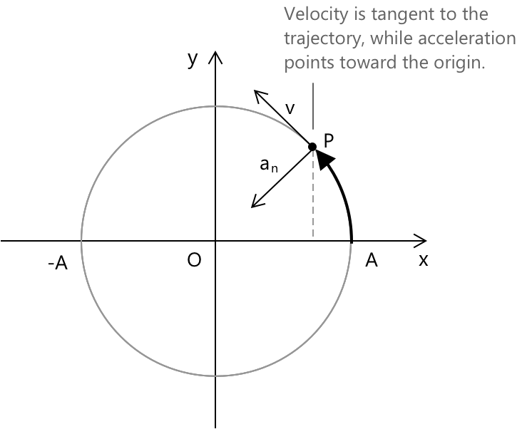

Простий гармонійний рух
Що таке простий гармонічний рух
Простий гармонічний рух — це прямолінійний рух, який отримують шляхом проєктування рівномірного кругового руху тіла на фіксований діаметр кола. У цьому випадку матеріальна точка неодноразово рухається вздовж діаметра, коливаючись туди й сюди та повертаючись у те саме положення через регулярні проміжки часу, що дорівнюють періоду руху.

Ця проєкція створює плавне та неперервне коливання, де відхилення від центру змінюється синусоїдально з часом. Положення як функція часу для простого гармонічного руху задається рівнянням:
\[ x(t) = A \sin(\omega t) \]
- \( A \) — це амплітуда, максимальне відхилення від положення рівноваги (функція \( \sin(\omega t) \) коливається між значеннями \( +1 \) та \( -1 \)).
- \( \omega \) — це кутова частота (в радіанах за секунду).
- \( t \) — це змінна часу.
Оскільки функція є періодичною з періодом \( T \), що означає, що вона повторюється від \( t \) до \( t+T \), аргумент тригонометричної функції має змінитися на \( 2\pi \).
Отже, маємо:
\[ \omega(t+T) – \omega t = 2\pi \]
Звідси ми виводимо основний зв'язок: \[ \omega = \frac{2\pi}{T} \] де \( \nu \) представляє частоту гармонічного руху і пов'язана з періодом наступним чином:
\[ \nu = \frac{1}{T} \]
У простому гармонічному русі, де центр коливань не збігається з початком координат, а розташований у точці \( x_0 \), загальне рівняння руху має вигляд:
\[ x – x_0 = A \sin(\omega t + \varphi) \]
- \( x(t) \) — положення матеріальної точки в момент часу ( t ),
- \( x_0 \) — центр, навколо якого відбуваються коливання,
- \( A \) — амплітуда,
- \( \omega \) — кутова частота,
- \( \varphi \) — початкова фаза.
Приклад 1
Наприклад, обчислимо рівняння простого гармонічного руху з періодом \( T = 3 \, \text{с} \) та амплітудою \( A = 0.5 \, \text{м} \).
Знайдемо кутову частоту.
\[ \omega = \frac{2\pi}{T} = \frac{2\pi}{3} \, \text{рад/с} \]
Таким чином, рівняння руху має вигляд:
\[ x(t) = 0.5 \sin\left( \frac{2\pi}{3} t \right) \]
Швидкість
Щоб знайти миттєву скалярну швидкість \( v(t) \), ми диференціюємо \( x(t) \) по часу:
\[ v(t) = \frac{dx}{dt} \]
Застосовуючи похідну: \[ \frac{d}{dt} \left( A \sin(\omega t) \right) = A \omega \cos(\omega t) \]
Таким чином, миттєва швидкість матеріальної точки дорівнює: \[ v(t) = A \omega \cos(\omega t) \]
Цей вираз показує, що швидкість змінюється з часом за функцією косинуса, досягаючи свого максимуму, коли частинка проходить через положення рівноваги.
- Швидкість при простому гармонічному русі не є сталою: вона змінюється з часом відповідно до тенденції функції косинуса.
- Коли тіло проходить через положення рівноваги (тобто \(x = 0\), центр руху), швидкість є максимальною.
- Коли тіло досягає крайніх точок (тобто в точках \(x = +A\) або \(x = -A\)), швидкість дорівнює нулю.
- Швидкість, будучи функцією косинуса, випереджає по фазі відхилення \(x\) при простому гармонічному русі.
Приклад 2
Наприклад, обчислимо миттєву швидкість простого гармонічного руху з періодом \( T = 3 \, \text{с} \) та амплітудою \( A = 0.5 \, \text{м} \).
Знайдемо кутову частоту.
\[ \omega = \frac{2\pi}{T} = \frac{2\pi}{3} \, \text{рад/с} \]
Функція положення має вигляд:
\[ x(t) = 0.5 \sin\left( \frac{2\pi}{3} t \right) \]
Диференціюємо по часу, щоб знайти швидкість:
\[ v(t) = \frac{dx}{dt} = 0.5 \times \frac{2\pi}{3} \cos\left( \frac{2\pi}{3} t \right) \]
Спрощуючи, отримаємо:
\[ v(t) = \frac{\pi}{3} \cos\left( \frac{2\pi}{3} t \right) \]
Прискорення
Щоб знайти миттєве прискорення \( a(t) \), ми диференціюємо функцію швидкості \( v(t) \) за часом:
\[ a(t) = \frac{dv}{dt} \]
Застосовуючи похідну:
\[ \frac{d}{dt} \left( A \omega \cos(\omega t) \right) = -A \omega^2 \sin(\omega t) \]
Таким чином, миттєве прискорення матеріальної точки дорівнює:
\[ a(t) = -A \omega^2 \sin(\omega t) \]
Цей вираз показує, що прискорення змінюється з часом за функцією синуса, досягаючи свого максимального значення, коли частинка перебуває на максимальній відстані від положення рівноваги.
- Прискорення при гармонічних коливаннях не є сталим: воно змінюється з часом за законом функції синуса.
- Коли тіло проходить через положення рівноваги (тобто \(x = 0\), центр руху), прискорення дорівнює нулю.
- Коли тіло досягає крайніх точок (тобто в точках \(x = +A\) або \(x = -A\)), прискорення досягає свого максимального значення.
Прискорення, будучи функцією синуса, знаходиться в протифазі відносно зміщення \(x\). При гармонічних коливаннях прискорення має лише нормальну складову \( a_n \), і воно є доцентровим, завжди спрямованим до центру коливань. Це означає, що в міру руху частинки прискорення безперервно діє, щоб повернути її до положення рівноваги.
При рівноприскореному прямолінійному русі вектор прискорення має дві складові: нормальну складову \( a_n \) та тангенціальну складову \( a_t \). Оскільки траєкторія залишається прямою лінією, нормальна складова \( a_n = 0 \). Однак тангенціальна складова \( a_t \) є сталою та ненульовою, що представляє сталу зміну модуля швидкості вздовж напрямку руху.
Приклад 3
Наприклад, обчислимо прискорення при гармонічних коливаннях з періодом \( T = 3 , \text{с} \) та амплітудою \( A = 0.5 \, \text{м} \).
Переглянемо кроки, виконані в попередніх прикладах. Спочатку знайдемо кутову частоту.
\[ \omega = \frac{2\pi}{T} = \frac{2\pi}{3} \, \text{рад/с} \]
Виходячи з рівняння руху:
\[ x(t) = 0.5 \sin\left( \frac{2\pi}{3} t \right) \]
Швидкість дорівнює:
\[ v(t) = 0.5 \times \frac{2\pi}{3} \cos\left( \frac{2\pi}{3} t \right) = \frac{\pi}{3} \cos\left( \frac{2\pi}{3} t \right) \]
Диференціюючи ще раз, знайдемо прискорення:
\[ a(t) = \frac{dv}{dt} = -\left( \frac{\pi}{3} \times \frac{2\pi}{3} \right) \sin\left( \frac{2\pi}{3} t \right) \]
Спрощуючи:
\[ a(t) = -\frac{2\pi^2}{9} \sin\left( \frac{2\pi}{3} t \right) \]